Interpolating scattered data with RBFs
- What is the interpolation problem?
- What is an RBF?
- What is a basic function?
- Why are RBFs suited to scattered data interpolation?
- How do we find an RBF interpolant?
- Why do I need FarField's FastRBFTM engine?
- What are direct methods (the alternative to FastRBFTM)?
- Greedy fitting - How does data compression come about?
- What is a fitting tolerance and why specify one?
What is the interpolation problem?
We want to approximate a real valued functionWhat is an RBF?
We choose to be a Radial Basis Function of the form| 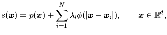 | (1) |
where is a polynomial of degree at most 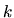 , 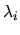 is a real-valued weight, denotes the Euclidean norm, is a basic function, 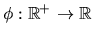, and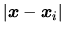 is simply a distance -- how far 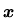 is from the point 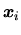.
- An RBF is a weighted sum of translations of a radially symmetric basic function augmented by a polynomial term.
What is a basic function?
The basic function , in this context, is a real function of a positive real 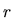, where is the distance (radius) from the origin. Popular choices for include
- The thin-plate spline 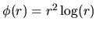 (for fitting smooth functions of two variables)
- The Gaussian 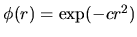 (mainly for neural networks)
- The multiquadric 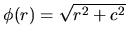 (for various applications, in particular fitting to topographical data)
For fitting functions of three variables, good choices include
- The biharmonic (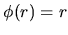) spline + linear polynomial
- The triharmonic (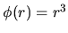) spline + quadratic polynomial
These polyharmonic splines (which include the thin-plate spline) minimise certain energy semi-norms and are therefore the ``smoothest'' interpolators. Note that the associated basic functions are not compactly supported - they grow as r increases from the origin.
Why are RBFs suited to scattered data interpolation?
RBFs are popular for interpolating scattered data as the associated system of linear equations is guaranteed to be invertible under very mild conditions on the locations of the data points. For example, the thin-plate spline only requires that the points are not co-linear while the Gaussian and multiquadric place no restrictions on the locations of the points. In particular, RBFs do not require that the data lie on any sort of regular grid.
How do we find an RBF interpolant?
The RBF interpolant
is defined by the coefficients of
the polynomial and the
weights .
Given the
interpolation values , we seek the
weights so that the RBF
satisfies
| 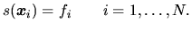 | (2) |
Because this gives an under-determined system, i.e., there are more parameters than data, the orthogonality or side conditions
 for all
polynomials of degree at most
. for all
polynomials of degree at most
. |
(3) |
are further imposed
on the coefficients 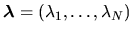.
Let 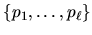be a basis for
polynomials
of degree at most and let 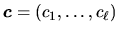be the
coefficients that give in terms of this basis.
Then Equation (2)
and
(3)
may be written in
matrix form as
| 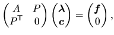 | (4) |
where
| 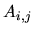 | 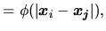 | 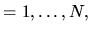 | ||
| 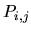 | 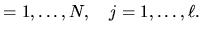 |
Solving the linear system (4) determines c and 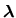, hence.
Why do I need FarField's FastRBFTM engine?
Basic functions,
such as the polyharmonic splines, that have desirable
approximation properties, tend to have non-compact support and
grow arbitrarily large. This means that the matrix in Equation (4)
is
not sparse and, except for symmetry, has no structure that can be
exploited for solving the system. This means direct solution of
Equation (4)
requires
 operations and
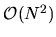 storage.
Moreover, naïve evaluation of Equation (1)
at points requires
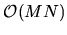 operations. This
has led many authors to conclude that RBFs are suitable for small
problems with up to a few thousand points. However, FarField's
FastRBFTM solvers are based on new
mathematical algorithms that reduce the fitting task down to
just 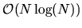 operations and 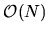 storage, and the
evaluation task down to just setup then 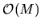 operations.
Furthermore, these fast methods run on standard desktop
hardware, even when the number of data points exceeds one
million. Previously, even storage of the system (4)
has been
impossible.
operations and
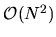 storage.
Moreover, naïve evaluation of Equation (1)
at points requires
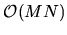 operations. This
has led many authors to conclude that RBFs are suitable for small
problems with up to a few thousand points. However, FarField's
FastRBFTM solvers are based on new
mathematical algorithms that reduce the fitting task down to
just 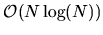 operations and 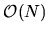 storage, and the
evaluation task down to just setup then 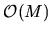 operations.
Furthermore, these fast methods run on standard desktop
hardware, even when the number of data points exceeds one
million. Previously, even storage of the system (4)
has been
impossible.
It should also be
noted that with the naïve approach, the matrix in Equation
(4)
typically has poor
conditioning. This means that substantial errors will easily
creep into any standard numerical solution.
| 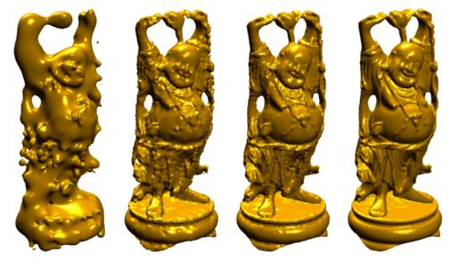 |
| Iterations from a `greedy' fit of an RBF to laser surface scan data |
Greedy fitting - How does data compression come about?
The equations which define an RBF interpolant (Eq. 4) imply that the number of terms in the RBF equals the number of data points.FastRBFTM provides a reduction option which uses a greedy algorithm to iteratively add data points to the RBF so that the data may be modelled with fewer terms to the same desired accuracy. This process is graphically illustrated above and in the associated MPEG (1.2MB) where an RBF is iteratively fitted to laser scan data from the smiling Buddha figurine. The RBF surface modelling process is described in the surfacing FAQ. The figure illustrates how the zero-valued iso-surface of the fitted RBF more closely approximates the object as more terms are added. The original data, consisting of 543,000 vertices, was modelled by 82,000 terms to within 1e-4 accuracy - a significant reduction in data.
- The RBF is guaranteed to pass through ALL the data points to within the user-specified precision.
What is a fitting tolerance and why specify one?
FastRBFTM allows users to specify a fitting tolerance and solve the corresponding inexact interpolation problem,
where is the tolerance at each data point. The RBF fitted is guaranteed to be within the specified fitting tolerance. Specifying an acceptable tolerance results in much faster fitting times, even when centre reduction (greedy fitting) is not specified. A tolerance also gives some robustness to low level noise on the data. Better methods for optimally fitting to noisy data are discussed in the smoothing and approximation FAQ.
The figure below illustrates the affect of the specifying a fitting tolerance. The first image is an exact FastRBFTM fit to the data - there is no difference between the RBF surface and the original surface data. In the second image a 1mm tolerance has been specified, resulting in some deviation from the raw data, but within the 1mm tolerance. In the final image a greedy fit has been employed to reduce the number of centres required to represent the surface to within 1mm. The number of centres has reduced from 6400 to 1800. The greedy fit has utilised the maximum 1mm deviation specified by the user at several of the original mesh vertices, this deviation is exaggerated by the colour scale which indicates the 1mm extremes by the blue and red colours. The head is 225mm x 150mm and the 1mm deviation is not noticeable at this scale and consequently suitable for many graphics applications.
| 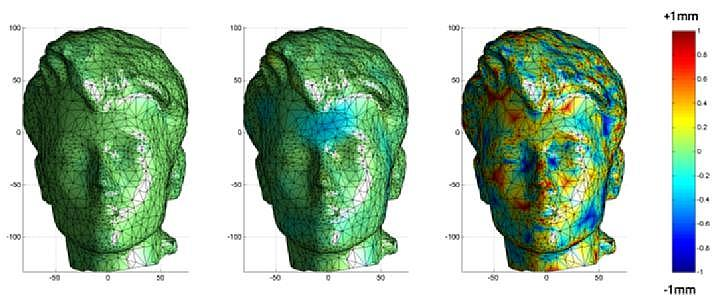 |
| FastRBF fitting strategies with deviation from original data colour coded. (a) Exact fit to mesh vertices (6400 centres) (b) Fit to all mesh vertices to an accuracy of 1mm (6400 centres) (c) Greedy fit to an accuracy within 1mm (1800 centres). |
| FastRBF FAQ |